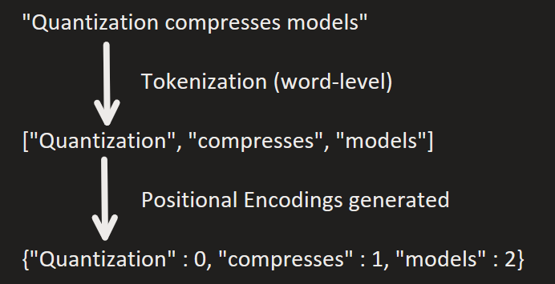
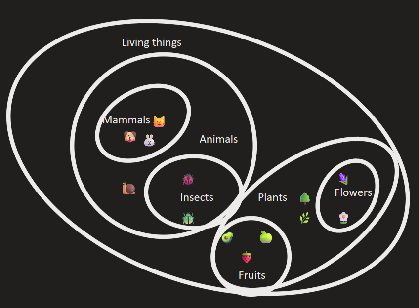
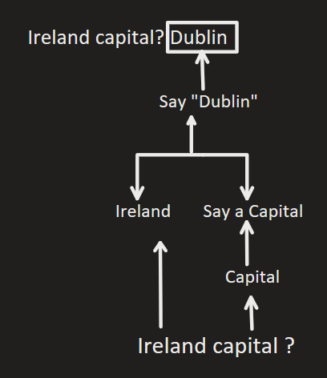
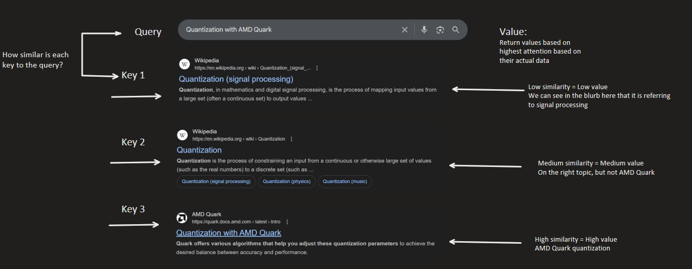
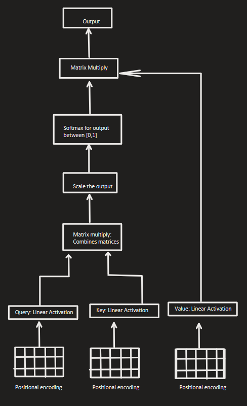
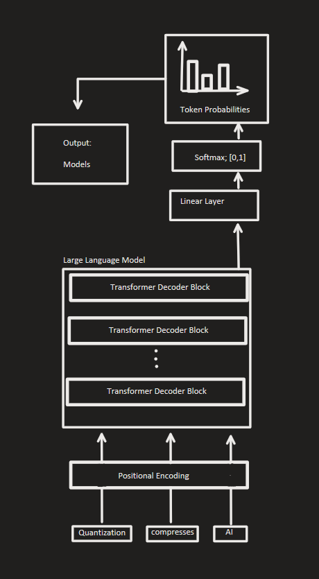

Quantizing a Large Language Model with Quark#
In this tutorial, we will be quantizing a Large Language Model (LLM) using AMD Quark. We are following on from the Quantizing a Diffusion Model using Quark tutorial. If you are not familiar with quantization, we recommended having a look at the Quickstart Tutorial first.
What You Will Learn#
Large Language Model fundamentals
AMD Command Line Interface (CLI) for Quantization
Advanced quantization algorithms
Comparing the model’s accuracy before and after quantization using benchmarks
Exporting using Hugging Face format
Installation and Setup#
Please refer to Recommended First Time User Installation for necessary packages imports, and AMD Quark Tutorial: PyTorch Quickstart for setting up Linux for Windows machines usign WSL (Windows Subsystem for Linux). As we will be using the CLI for this tutorial, WSL is needed to run our scripts using Linux to download, quantize and evaluate our model.
If you have not already completed the diffusion model tutorial, we must install the necessary additional packages required for this tutorial. You can run the commands:
pip install accelerate notebook safetensors transformers huggingface_hub[cli]
If you are using GPUs compatible with ROCm (AMD GPUs), you can install the PyTorch version below to accelerate runtime. You should check PyTorch’s installation page for instructions on installing an up-to-date version for your system. For example, we used ROCm 6.2.4 in this tutorial, which we installed as follows:
pip install torch torchvision torchaudio --index-url https://download.pytorch.org/whl/rocm6.2.4
If you are using GPUs compatible with CUDA (NVIDIA GPUs), you can install the below version instead. This tutorial uses CUDA 12.6, but feel free to swap it out for a different version.
pip install torch torchvision torchaudio --index-url https://download.pytorch.org/whl/cu126
You can also install the requirements necessary to run Quark with the below:
pip install amd-quark
By default, Hugging Face uses paths stored in environment variables
HUGGINGFACE_HUB_CACHE, and HF_DATASETS_CACHE as the location to
cache downloaded models and datasets, respectively. You can set these
environment variables to specify your own paths. By default they will be
under ~/.cache/huggingface/hub/ and
~/.cache/huggingface/datasets/.
We will be using the example scripts available in the Quark github repository to run our CLI scripts.
Large Language Model Fundamentals#
Chunking & Tokenization#
Tokenization converts the user’s prompt into a numerical representation
called tokens. In production-use LLMs like ChatGPT, tokens are generally
subsections of a word. For example, the word Ireland may be split
into Ire and land. However, sometimes tokenization is performed
at a character or word level. Special characters, such as <UNK> for
unknown words, or <PAD> for padding, <EOS> for end of sentence,
are also included.
Text Encoding#
The tokens are mapped to their corresponding integers, to allow the computer to read them. This is called text encoding.
In each layer, the token is contextualized within a context window; a fixed-length of surrounding tokens (think: a word in a sentence). Higher-importance tokens within the context window are prioritized using an attention mechanism; more on this later. In a LLM, the model uses the context window to generate the next most likely token in a sequence.

The tokens are usually processed in parallel, to speed up compute time.
This is why we check if we can use a GPU with
torch.cuda.is_available(), as GPUs are very efficient at processing
data in parallel. However, this means we lose the position of the words
in our sentences/tokens in our context window. To solve this, we add a
positional embedding. You can think about it like a dictionary of
tokens with a corresponding index associated with it:

To process a large text into smaller and more manageable pieces for the model to interpret, the text is split into sections called chunks to allow the LLM to process it within its context window.
Latent Space#
While the machine can now read our text encodings, there is no way for the machine to relate other tokens to each other. We can solve this issue by mapping all the encodings into a co-ordinate space (think: each token will now have a physical co-ordinate, or location, on a map or grid), with the distance between encodings being their closeness in relation to each other. We call this mapping a latent space. You can think of it as below:

You can clearly see the different categories as below:

In a computer, however, instead of a two-dimensional space, it is n-dimensional. The emojis, depicted above, can represent the machine’s understanding of the word as a floating-point number, which corresponds to its coordinate in latent space. For example, the model might think in the following way:
\(king - man + woman ~= queen\)
which could be something similar as below:
\(0.51-0.22 + 0.24 ~= 0.528\)
As seen in the diagrams, similar concepts cluster together. Directions in the space can correspond to features like tense, plurality, or sentiment.
We can put together the tokenization -> text encoding -> latent space as follows:

prompt_processing#
It’s important to note that LLMs are unambiguous; i.e. each word is context-dependent. With human language, words may have dual meanings, such as orange meaning a fruit and a colour. The model uses the context window to figure out which meaning the word has, during content generation/inference.
Transformers & Attention#
Transformers are most famous for their use in LLMs, however they are also used in computer vision, audio processing, and other tasks. We need to make sure that more important words are prioritized in our context for our next token generation. This is where transformers come into play; they are able to distinguish between important vs. not as important parts of information during inference (prompting) and training. As transformers can also be used in image segmentation tasks, we can think about the attention mechanism visually as below:

The important part of the picture, the two rabbits, are extracted. The background is not considered as much when classifying, as we are looking for the focus of the image; the two rabbits. This is very similar when we consider prompts. For example, if we have the prompt:
The capital of Ireland is
the model puts its focus on capital and Ireland, and does not
consider the other words as much, like the, of, and is, as
their addition does not change the meaning of the sentance as much. If
the user inputted capital Ireland, the model would still associate
it with Dublin despite the incomplete sentence.
Testing with Microsoft Copilot, we can see this is the case, with slight variations in its response:
compared to
The reasoning can be visualized as follows:

Within the transformer architecture, the self-attention mechanism
computes the attention scores so the transformer model knows which words
to assign more priority to. It uses Query, Key and Value
(Q, K, V) values to assign these priorities.
We can think about the Query, Key and Value intuitively by
considering a search query, as below:

The Query is the search. The Key is the indexes or titles of the
links returned (like “Quantization (signal processing)”). The Value
is the actual information within the Key; for example, the Wikipedia
page itself.
We can calculate the attention. The output of the transformer can be
calculated through the dot product of the Query and Key tokens.
We then use a softmax to get the attention weights. The Value
vectors are weighted by this result.
Putting it all together, we can now make our transformer architecture as below:

LLMs use Multi-Headed attention; this allows the model to have different relationships between words. This is like our example from earlier with the orange representing a colour and a fruit. Each head has it’s own sub-space these results are joined together and projected back into the latent space.
Model Architecture#
Once the attention has been computed, the output is fed through a neural network. This is composed of multiple transformer blocks, with a self-attention mechanism and a feed-forward neural network. This structure allows the model to get the different hierarchical representations of the text.
The final layer is a softmax layer that converts our output into probabilities, to select the next most likely token.
The full LLM architecture can be described as below:

To break it down, the LLM processes and outputs text as follows:
User inputs a prompt
Prompt is chunked & tokenized
Tokens are embedded into latent space
Positional encodings are added
Input is fed through a series of transformer blocks for processing
Output is fed through a linear layer for transforming into correct size
Output is fed through softmax to get output in the range \([0,1]\); i.e. their probabilities
Token probabilities are generated from softmax to find next most probable word
Next token is repeatedly generated from next most probable outcome
This process is repeated until until max token limit is reached.
CLI Scripts#
Now that we have covered the theory of the architecture of LLMs, we can get started with our code implementation. We will be using Quark’s Command Line Interface (CLI). This means we will be running our scripts using the terminal, rather than writing the python scripts directly.
The following quantization portion of this tutorial is intended to run
with a GPU, since it can process tensor operations much faster than a
CPU due to its parallel architecture. You can test if you have the
correct access by running the script below. If the output returns
True, you have access to a compatible GPU. Otherwise, you will be
running on CPU.
import torch
torch.cuda.is_available()
Downloading the Model#
We will be using Mistral’s 7B instruct model during this tutorial, but feel free to switch in for another model if you would like! It’s important to note that only a select few models are supported by the CLI; you can view a list of them here.
If you have not already done so, make sure to create a Hugging Face account so we can download the models for use. Like in the previous tutorial on diffusion models, we need to request access to the repository so we can download it. You can navigate to the following link: mistralai/Mistral-7B-v0.1. Click the button to access the repo:
access_repo#
Once you have access, you can try running the below command to download a Llama model from Hugging Face and evaluate it’s performance prior to quantization. You can switch out a different model from the supported list by copying the repo name:

copy_repo_name#
and switching it out from mistralai/Mistral-7B-v0.1.
Please note that the mistral-7B model requires 14.48 GB of storage.
Consider switching to a smaller model like
llama-1b, which
requires 2.5 GB of storage if you do not have enough room on your
device. A general rule of thumb is the larger the number of parameters,
the more accurate the model is, the more compute it will take to run,
and the larger its file size is.
Login to the Hugging Face API locally by running the below in your
terminal and inputting your token: huggingface-cli login
Now, we can download our model. You can see the commands within the CLI
to specify what task we are doing; model_dir refers to the path from
our copied Hugging Face dir, and we set the skip_quantization flag
as we want to just download our model right now.
!hf download mistralai/Mistral-7B-v0.1
Model Evaluation: Pre-Quantization#
As we will be quantizing our model, i.e. reducing the precision of our model’s weights to improve performance speed, we need a way to measure the degradation in quality. In the previous tutorial on diffusion model quantization, we were able to compare the quality degradation through our generated images, however with text outputs, it isn’t as obvious where the degradation in quality is. Therefore, we need to test or benchmark our model before and after quantization, rather than just reviewing the outputs.
We will be using a test called Measuring Massive Multitask Language Understanding. This test measures an LLM’s multitask accuracy in 57 tasks including elementary mathematics, law, US history, computer science, and more. We will be testing just a few tasks from MMLU as otherwise, it will take a long time to run. The tasks are divided into four categories; humanities, other, social sciences, and STEM. We will be taking one from each category; professional law from humanities, management from others, sociology from social sciences, and machine learning from STEM.
Let’s set our model directory path to call in our bash script. The model
directory should be downloaded into the .cache folder as a default,
as below.

model_dir#
If we were specifying this as our model checkpoint, we could set it using the command below:
MODEL_PATH=/.cache/huggingface/transformers/models--mistralai--Mistral-7B-v0.1/snapshots/27d67f1b5f57dc0953326b2601d68371d40ea8da
Note that the snapshot changes for each user. The large number,
27d67f1b5f57dc0953326b2601d68371d40ea8da is used to differentiate
between multiple downloaded models of the same type, so we can download
the same mistralai model multiple times for different purposes.
Now, we can call our bash script as below:
%%sh
SNAPSHOT=$(ls "$HUGGINGFACE_HUB_CACHE/models--mistralai--Mistral-7B-v0.1/snapshots" | head -n 1)
MODEL_PATH="$HUGGINGFACE_HUB_CACHE/models--mistralai--Mistral-7B-v0.1/snapshots/$SNAPSHOT"
# Set the path to your snapshot here, as in described above:
# MODEL_PATH=.cache/huggingface/transformers/models--mistralai--Mistral-7B-v0.1/snapshots/27d67f1b5f57dc0953326b2601d68371d40ea8da/
!python examples/torch/language_modeling/llm_eval/llm_eval.py --model_args pretrained=$MODEL_PATH --model hf --tasks mmlu_professional_law,mmlu_management,mmlu_sociology,mmlu_machine_learning --batch_size 1 --device cuda
The output should be similar to the below:

prequant_stats#
Quantization#
Now that we have evaluated our model performance, let’s quantize and
export our model. We will be quantizing our model using int4
quantization. Hugging Face models are typically stored in FP32; this
means there is an x8 decrease in weight size from our original model.
However, with such an aggressive quantization method, the accuracy of our model will be greatly impacted, especially considering it is already a significantly smaller model than used in industry at 7 billion parameters compared to GPT-3, which has 175 billion, or GPT-4, which is estimated to be around 1.76 trillion parameters. Therefore, we must think about if there is any ways we could select some weights for quantization while leaving more important ones at full accuracy, to make sure our quality does not degrade too much.
This is where quantization algorithms come into play. In this tutorial,
we will be using a quantization algorithm called AWQ: Activation-aware
Weight Quantization, specifically designed for low-bit precision like
int4. In LLMs, not all weights contribute equally to model
performance; even by just protecting 1% of higher-importance weights, we
can greatly reduce the quantization error. This is done by checking the
model activations to see which weights are of importance. Take the
diagram below of a tiny neural network:

neuron#
The output of this simple network in the image can be calculated by taking the dot product of our weights with our inputs, then adding our bias and putting it into the activation function. In our LLM transformer, these layers are stacked on top of one another, and when we input a prompt, the embeddings are filtered through the model, activating different neurons. With AWQ, we see which of these activations are selected frequently in high-importance, and only quantize the ones which are not as critical to performance.
To select the activated neurons, we have to have a calibration set to
let our model measure the activations. We will be using the
pileval_for_awq_benchmark dataset as specified in our CLI command.
We will be exporting our model in hf_format, so we can test the
quantization benchmark again later.
Let’s run the below script to quantize our model weights with
int4 AWQ quantization and save it to a new folder called
quantized_llm.
!python3 quantize_quark.py --model_dir $MODEL_PATH --output_dir output_dir --quant_scheme w_int4_per_group_sym --num_calib_data 128 --quant_algo awq --dataset pileval_for_awq_benchmark --seq_len 512 --model_export hf_format
python3 quantize_quark.py --model_dir $MODEL_PATH \
--output_dir output_dir \
--quant_scheme w_int4_per_group_sym \
--num_calib_data 128 \
--quant_algo awq \
--dataset pileval_for_awq_benchmark \
--seq_len 512 \
--model_export hf_format
Model Evaluation: Post-Quantization#
Now that we have quantized our model, let’s benchmark it again using the same script from earlier.
!python llm_eval.py \
--model_args pretrained="llm_quant"\
--model hf \
--tasks mmlu_professional_law,mmlu_management,mmlu_sociology,mmlu_machine_learning \
--batch_size 1 \
--device cuda
Further Reading#
Tutorials/Articles#
On the Biology of a Large Language Model
Explains the internals of how LLMs “think” beyond just a black box
-
More in-depth description on the background of LLM models
-
A video on creating a LLM from scratch in PyTorch, by a founding engineer of ChatGPT, Andrej Karpathy
-
Detailing how to use ONNX runtime on AMD GPUs for inference using ONNX
Papers#
-
Original Transformer model paper; based on language translation tasks
Improving Language Understanding by Generative Pre-Training
Introduces the original ChatGPT; the first pretrained Transformer model
A Latent Space Theory for Emergent Abilities in Large Language Models
Examining latent space clustering for words in LLMs
Measuring Massive Multitask Language Understanding
Introduction to the method used to evaluate our LLM performance; MMLU
AWQ: Activation-aware Weight Quantization for LLM Compression and Acceleration
Weight selection for quantization accuracy